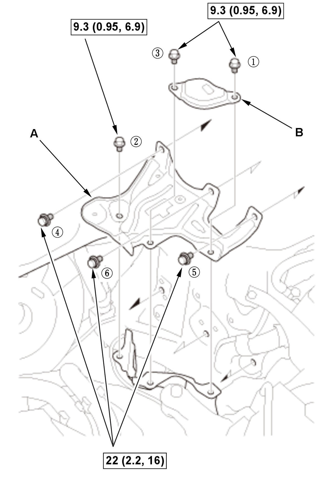
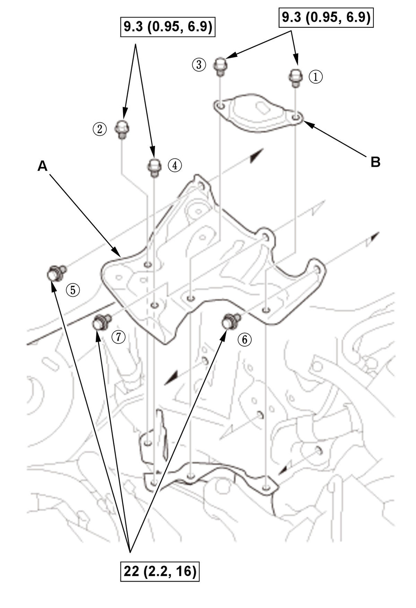
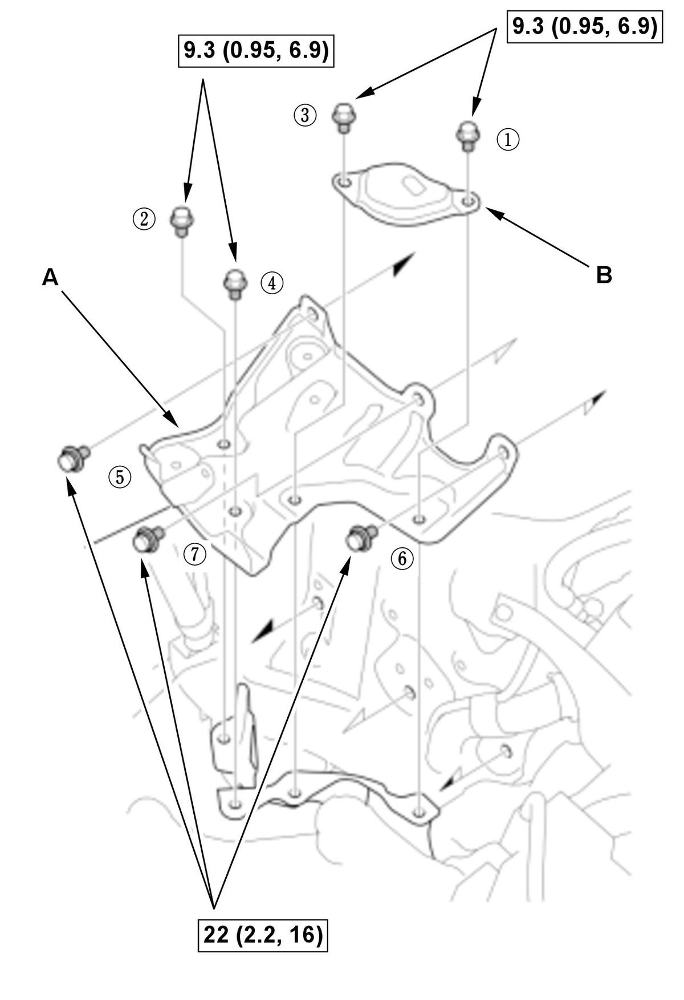
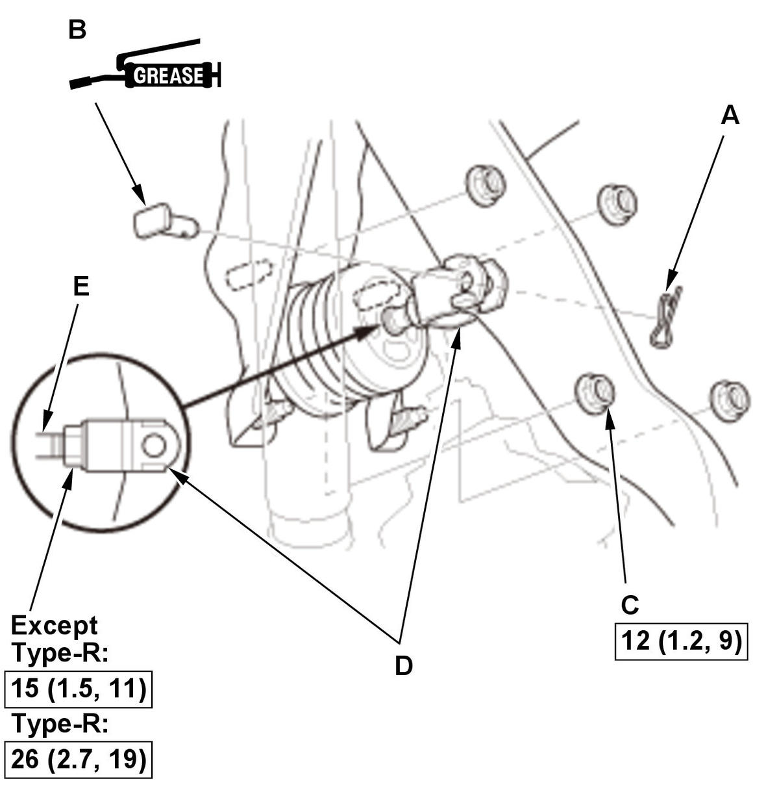

Removal and Installation
NOTE:
- How to read the torque specifications .
- Review the Service Precautions before doing repairs or service .
- Unless otherwise indicated, illustrations used in the procedure are for 1.5L engine.
- 12 Volt Battery - Remove
- Master Cylinder - Remove
- 12 Volt Battery Base - Remove
1. Type-R: Remove the bolt (A) and the clip (B). Fig 1: 12 Volt Battery Base And Patch Components With Tightening Sequence And Torque Specifications (USA And Mexico Models - Except Type-R)
Courtesy of HONDA, U.S.A., INC.Fig 2: 12 Volt Battery Base And Patch Components With Tightening Sequence And Torque Specifications (Canada Models - Except Type-R)
Courtesy of HONDA, U.S.A., INC.Fig 3: 12 Volt Battery Base And Patch Components With Tightening Sequence And Torque Specifications (Type-R)
Courtesy of HONDA, U.S.A., INC.2. Remove the 12 volt battery base (A) and the 12 volt battery patch (B).
NOTE: During installation, tighten the bolts to the specified torque in the numbered sequence shown. - Brake Line - Remove
1. Remove the brake lines (A) from the brake line clamp (B). - Heater Hose - Remove
1. Remove the heater hoses (A) from the heater hose clamp (B). - Throttle Body - Remove (Type-R)
- Brake Booster - Remove
1. Disconnect the brake booster vacuum hose (A) from the brake booster. 
Courtesy of HONDA, U.S.A., INC.2. Remove the lock pin (A). 3. Remove the clevis pin (B).
NOTE: During installation, apply multipurpose grease to the clevis pin in the brake pedal.
4. Remove the brake booster mounting nuts (C).
5. Remove the yoke (D) from the pushrod (E).
6. Remove the brake booster (A) from the engine compartment.
NOTE:- Be careful not to damage the brake booster surfaces and threads of the brake booster stud bolts.
- Be careful not to bend or damage the other components hoses and lines.
7. Remove the brake booster gasket (B).
NOTE: Use a new brake booster gasket during reassembly.
- All Removed Parts - Install
1. Install the parts in the reverse order of removal. - Brake System - Bleed
- Clutch Hydraulic System - Bleed (M/T)
- Brake Pedal Height and Free Play - Check
- Brake Booster Pushrod Length (Reference)